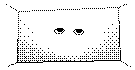

We get used to living in back apartments and having no other view than the surrounding windows. And, because there's no view, we soon get used to not looking outside. And, because we don't look outside, we soon get used to not opening the curtains at all. And, because we don't open the curtains, we soon get used to turning on the lights earlier. And as we get used to it, we forget the sun, forget the air, forget the spaciousness.
We get used to waking up in the morning startled because it's time. Having breakfast in a hurry because it's late. Reading the newspaper on the bus because we can't waste our travel time. Eating a sandwich because we can't have a proper meal. Leaving work because it's night already. Napping on the bus because we are tired. Laying down early and sleeping hard without having lived the day.
We get used to waiting all day and hearing on the phone: I can't go today. Smiling at people without getting a smile back. To be ignored when we so needed to be seen.
We get used to paying for everything we want and need. And struggling to earn the money to pay. And paying more than things are worth. And knowing that you will pay more and more. And looking for more work, to earn more money, to have what it takes to pay in queues.
We get used to walking down the street and seeing posters. Opening magazines and seeing advertisements. Turning on the TV and watching commercials. Going to the movies and swallowing publicity. To be instigated, driven, bewildered, thrown into the endless waterfall of products.
We get used to pollution. To closed rooms with air conditioning and the smell of cigarettes. To the artificial light with a slight tremor. To the shock that the eyes take in natural light. To the bacteria of the drinking water.
We get used to things too much, not to suffer. In small doses, trying not to notice, it takes away a pain here, a resentment then, a revolt there. If the beach is contaminated, we only wet our feet and sweat on the rest of the body. If the cinema is full, we sit in the front row and twist our neck a little. If work is hard, we console ourselves by thinking about the weekend. And if there isn't much to do on the weekend, we go to bed early and still feel satisfied because our sleep is always delayed.
We get used to not worrying about roughness, to preserve the skin. Get used to it to avoid wounds, bleedings, to spare the chest. We get used to sparing life. That slowly wears out, and that, worn out from so much getting used to, loses itself.
MARINA COLASANTI 1995